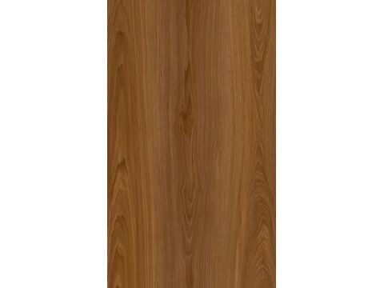
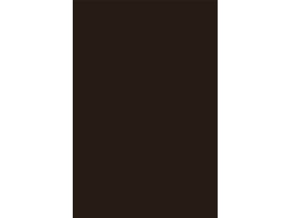
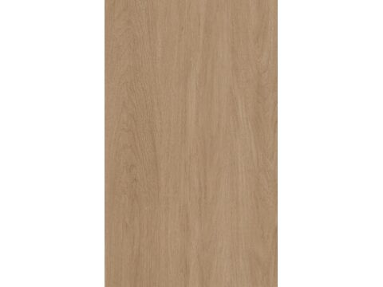
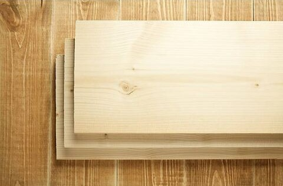

MDF
Chapas cruas, brancas e madeiradas. Padrões TX texturizados para móveis planejados, painéis e revestimentos.
- MDF Berneck
- MDF Fibraplac
- Linha TX 2 faces
MDF · Compensado · Sarrafo · Ferragens
Chapas de MDF TX, compensado naval e virolinha, sarrafo, fórmica, ferragens e químicos para marcenarias, montadoras de stand, indústria e construção. Informe os produtos e as quantidades e enviamos um orçamento personalizado.
Lançamentos · Linha TX



15 mm · 2 faces · 2,75 × 1,85 m
Produtos
Escolha a categoria e peça o orçamento. Atendemos marceneiros, montadoras, indústria, construtoras e clientes finais.
Chapas cruas, brancas e madeiradas. Padrões TX texturizados para móveis planejados, painéis e revestimentos.
Compensado comum, naval e virolinha para estruturas, baús, formas e montagem de estandes.
Sarrafos para estruturas, travamentos, montagem de stands, cenografia e acabamentos.
Laminados para revestir bancadas, balcões, portas e móveis com acabamento resistente.
Fechaduras e ferragens para completar o móvel ou a obra sem precisar de outro fornecedor.
Colas, produtos de acabamento e químicos de uso em marcenaria, com orientação de uso.
Linha TX · Lançamentos
O acabamento TX tem relevo que reproduz o veio da madeira e um toque fosco, mais resistente a marcas de dedo e riscos do dia a dia. Todas as chapas abaixo são de 15 mm, 2 faces, no formato 2,75 × 1,85 m.
Produtos seguros
Segurança, para nós, vale tanto para o produto quanto para a sua compra. Você recebe exatamente o que pediu, com chapas na espessura e na medida certas e procedência informada.
Solicitar orçamentoChapas de fabricantes reconhecidos, como Berneck e Fibraplac, com marca e especificação informadas no orçamento.
Formato, espessura e número de faces descritos em cada item, para não haver diferença entre o que foi pedido e o que chega.
O pedido é separado e conferido antes de sair, para evitar chapas trocadas, danificadas ou faltando.
Colas e produtos químicos vendidos com orientação de uso e armazenamento.
Política clara de entrega, reembolso e devoluções, e atendimento direto por telefone, WhatsApp ou e-mail.
Para montadoras e profissionais
MDF madeirado, sarrafo e compensado virolinha em diversos tamanhos e espessuras, no volume e no prazo que o evento exige.
Como funciona
Informe os produtos, as medidas e as quantidades.
Enviamos um orçamento personalizado, com preço e prazo.
Aprovou? Separamos e conferimos cada item.
O material chega na obra, na marcenaria ou no pavilhão.

A empresa
Com ampla experiência no mercado, a Nova Radiante Madeiras se destaca no comércio de madeiras e ferragens, com produtos de alta qualidade e atendimento especializado.
Trabalhamos com uma linha completa de chapas de madeira, como MDF, compensado, TS e naval, entre outras soluções para fabricação de móveis, estruturas industriais, baús, montagem de estandes e diversas aplicações em marcenaria e construção.
Nossa missão é fornecer materiais com excelente custo-benefício, garantindo resistência, acabamento e durabilidade para cada necessidade.
Nova Radiante Madeiras: a base forte para o seu projeto.
Depoimentos
“Ótimo atendimento! Recomendo bastante a loja!”
Roberta, cliente
Dúvidas
Envie a lista de produtos e quantidades pelo formulário abaixo, pelo WhatsApp (11) 99918-3616, pelo telefone (11) 2058-5303 ou pelo e-mail. Retornamos com um orçamento personalizado.
É um acabamento texturizado, com relevo que acompanha o desenho da madeira e toque fosco. É mais resistente a marcas de dedo e riscos e muito usado em móveis planejados.
Sim. Fornecemos MDF madeirado, sarrafo e compensado virolinha em volume, em diversos tamanhos e espessuras, para montadoras e profissionais de eventos.
Sim, fazemos entrega rápida. O prazo e o frete são informados no orçamento, conforme o endereço e o volume do pedido.
Seguimos nossa política de reembolso e devoluções. Fale com a nossa equipe e explique o caso; vamos orientar a melhor solução.
Orçamento
Informe os produtos e a quantidade de que precisa e encaminharemos um orçamento personalizado. O formulário abre o WhatsApp com a sua mensagem pronta.